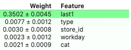

0_模型可解释性
所属 Topic：机器学习 · 类型：方法
sometimes you have to tell why
先说下可解释性问题的分类。根据不同的解释方法，可归属于如下的不同类别：
- 内在还是事后。 内在即模型本身就是可解释性的比如线性、树模型。事后的可解释性则主要是对于集合方法或者神经网络方法提供的一种可解释。
- 模型特定or不可知。有些是针对特定模型的解释，有些是与模型本身无关的
- local还是global。即是解释单个预测，还是整个模型行为
汇总：
| 分类 | ||
|---|---|---|
| global | PermutationImportance, SHAP | |
| local | LIME 速度较慢，SHAP | |
| 分析单独特征 | PDP， ICE |
下面是对各个方法的具体介绍:
PermutationImportance#
基本原理：
- 拿某一个feature column, 然后随机打乱顺序。然后用模型来重新预测一遍，看看自己的metric或者loss 。function变化了多少。
- 把上一个步骤中打乱的column复原，换下一个column重复上一个步骤，直到所有column都算一遍。
import eli5 # python计算permutation importance工具包
from eli5.sklearn import PermutationImportance
perm = PermutationImportance(model, random_state = 1).fit(X_test, y_test) # 实例化
eli5.show_weights(perm, feature_names = X_test.columns.tolist())
其输出结果如下所示:

为了排除随机性，每次suffle的时候都会尽心过多次，weight记录的是其均值±标准差
Partial Dependency Plot#
https://scikit-learn.org/stable/modules/generated/sklearn.inspection.plot_partial_dependence.html
主要是针对一个特征进行分析，也可以两个，但是不是很好读。
部分依赖图，可以显示目标与特征之间的关键是线性的、单调的、还是更复杂的。
基本思想就是：想看某个特征对目标变量的影响即 P(Y|X1)，而实际模型中会有很多其他的特征，利用边际分布，将其他特征维度进行积分累加 p(Y|X1) = \int_{X_2,..X_k} p(Y|X_1, X_2,..X_k)
PDP的分析步骤如下: 训练好一个model，假设要研究X1,则对X1的所有可能取值假设是{v1,v2,...}，进行如下步骤:
- 将X1列全部替换为某一取值v1, 并为所有新观测进行预测，将预测结果的均值作为F(v1)
- 依次对v2, v3...执行同样步骤，得到F(v2), F(v3)
- PDP图的x轴就是v1,v2,..., Y轴就是平均预测值F(v1), F(v2)....
def plot_PDP(model, df, m_feature):
## 分析单独特征 m_feature
from pdpbox import pdp
# 创建好画图所需的数据
pdp_goals = pdp.pdp_isolate(model, df, df.columns, m_feature)
# 画出“age”这一特征的partial dependence plot
pdp.pdp_plot(pdp_goals, feature)
plt.show()
ICE#
ICE(个体条件期望图)与PDP类似，是研究单个个体的，对单个个体的某个特征改变特征的取值，然后看模型的预测结果
LIME#
原理详见LIME的介绍
explainer = lime.lime_tabular.LimeTabularExplainer(X_train ,feature_names = features_name, class_names=['0','1'], categorical_features=data_cat_features,
categorical_names=cat_columns, kernel_width=3)
predict_fn_xgb = lambda x: xgb.predict_proba(x).astype(float)
exp = explainer.explain_instance(X_test[2], predict_fn_xgb, num_features=6)
exp.show_in_notebook(show_all=False)
SHAP#
详见 论文-shap的介绍
Retain /LRP#
特定模型中的特征归因#
1. xgboost 中的特征重要性#
注意: model.feature_importances_的重要性排名默认使用gain，
而xgboost.plot_importance(model)默认使用weight。
树模型中常见的几个计算特征重要性的方式:
- split: 一个特征在整个树模型中被用于分裂的次数，即xgboost中的weight
- cover
- gain
- saabas
可解释性巩工具#

https://docs.qq.com/pdf/DSmVSRHhBeFd0b3Zu
-
Alibi
https://docs.seldon.io/projects/alibi/en/latest/overview/getting_started.html -
微软 interpretML
https://github.com/interpretml/interpret
https://interpret.ml/docs/getting-started
参考资料#
汇总 https://www.jiqizhixin.com/articles/2019-10-30-9
常用的 https://zhuanlan.zhihu.com/p/78210962
常用的 https://www.sohu.com/a/274021299_100285715
https://cloud.tencent.com/developer/news/623633
不同方法一致性对比: https://www.sohu.com/a/274021299_100285715
shap: https://zhuanlan.zhihu.com/p/85791430
https://zhuanlan.zhihu.com/p/83412330
R LIME https://uc-r.github.io/lime 汇总图